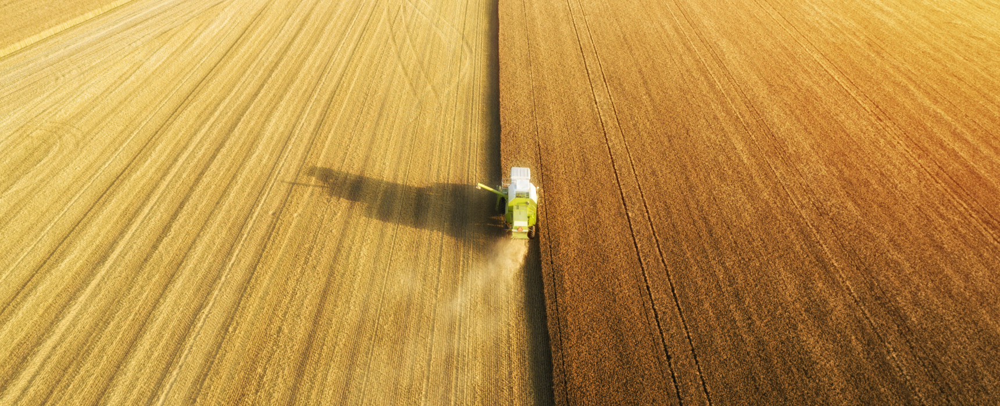

Named TOP-5 regions in terms of the yield of major crops
As of December 10, Ukrainian agricultural producers have already harvested 82.7 million tons of staple crops from an area of almost 24 million hectares, of which grain and leguminous crops account for 64.3 million tons (15.2 million hectares, 99%). This is evidenced by the data of the project «Harvest Online 2020».
The harvesting campaign is still going on in Ukraine
Corn — 28.8 million tons from an area of 5.3 million hectares (98%) with an average yield of 5.41 tons / ha. In addition, 9.15 million tons of sugar beet were dug up on an area of 215.5 thousand hectares (100%) with an average yield of 42.35 tons / ha.
The farmers have already completed the cleaning
Wheat
25.1 million tons from an area of 6.56 million hectares (yield — 3.83 t / ha)Barley
7.77 million tons from an area of 2.38 million hectares (3.26 tons / ha)Peas
25.1 million tons from an area of 6.56 million hectares (yield — 3.83 t / ha)Buckwheat
105.6 thousand tons from an area of 78.4 thousand hectares (1.35 tons / ha)Millet
243.7 thousand tons from an area of 150.3 thousand hectares (1.62 tons / ha)Sunflower
13.13 million tons from an area of 6.4 million hectares (2.06 tons / ha)Soybeans
2.8 million tons from an area of 1.3 million hectares (2.07 tons / ha)Also, farmers harvested 2.55 million tons of rapeseed from an area of 1.11 million hectares (100%) with an average yield of 2.29 tons / ha.
The TOP‑5 leaders among the regions where the largest gross harvest of major agricultural crops is collected includes:
Poltava
6.4 million tonsKharkovskaya
6.2 million tonsChernigov
5.9 million tonsBuckwheat
5.6 million tonsMillet
5.5 million tonsTo keep abreast of the latest data on the progress of the harvesting campaign in Ukraine, follow the updates of the Harvest Online 2020 project. The project was created by Latifundist.com in partnership with Soufflet Agro Ukraine.